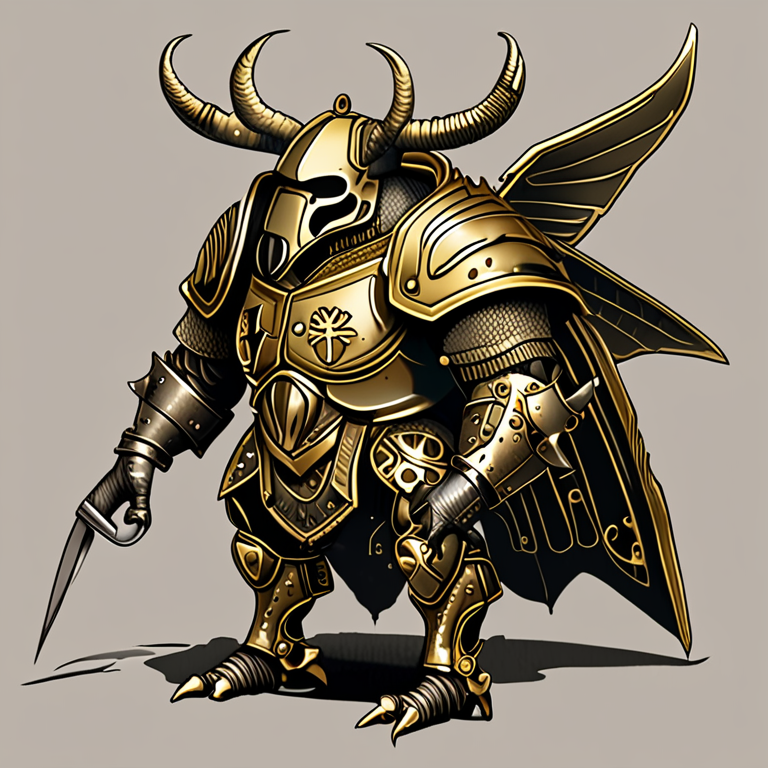

🪲 Taxón: Escarabajos — "La Nobleza Acorazada"

🚧 Concept Art — Pre-Alfa
La Nobleza Acorazada. Los Coleópteros son el orden más exitoso del planeta — 1 de cada 4 animales es un escarabajo. En el Gran Charco, son la aristocracia guerrera antigua. Se consideran descendientes directos de Arthropleura y miran al resto de taxones como "plebeyos genéticos". Su exoesqueleto es el más duro del mundo insecto — literalmente impenetrable para la mayoría de depredadores.
Ficha del Taxón
📊 Stats Base
Distribución de Atributos
⚙️ Perfil de Combate
Tanque puro. QUI 10 y TOR 9 los hacen prácticamente indestructibles en combate frontal. Su debilidad está en la baja CRI (no pueden esconderse) y GAN mediocre (no acumulan recursos rápido). Son la muralla viviente del campo de batalla.
⚔️ Atavismos
Coraza Ancestral
Mandíbula de Acero
Carga del Hércules
💀 Defecto Genético: Orgullo de Casta
⚙️ Efecto Mecánico
No acepta órdenes de taxones "inferiores".
- Penalización en cooperación con facciones menores
- No puede recibir buffs de taxones que considere "plebeyos" (la mayoría)
- Si un aliado de menor rango intenta darle una orden, el Escarabajo pierde 1 turno de indignación
- Solo acepta liderazgo de otros Escarabajos o de taxones con FER superior al suyo
📖 Lore
La Aristocracia del Exoesqueleto
Los Coleópteros son el orden más exitoso del planeta — 1 de cada 4 animales es un escarabajo. En el Gran Charco, son la aristocracia guerrera antigua. Se consideran descendientes directos de Arthropleura y miran al resto de taxones como "plebeyos genéticos".
Su exoesqueleto es el más duro del mundo insecto — literalmente impenetrable para la mayoría de depredadores.
Subtipos Nobles
- Rinoceronte — Gladiadores de arena
- Joya — Nobleza estética, los más bellos
- Pelotero — Sacerdotes del ciclo (vida/muerte/renacimiento)
- Hércules — Generales de guerra
- Tortuga Dorado — Diplomáticos cambia-color
- Chinitas — Mercenarias adorables
- Pololos — Caballeros errantes torpes
🔬 Dato Real
🧪 Ciencia Detrás del Taxón
Los escarabajos rinoceronte pueden levantar 850 veces su propio peso. Su exoesqueleto tiene una estructura de capas que lo hace más resistente que el acero proporcionalmente.
📚 Novela Potencial: "El Último Torneo"
Sinopsis
Un escarabajo gladiador descubre que los combates de arena están amañados por La Colmena. La nobleza que tanto venera es una farsa — los torneos son teatro para mantener al pueblo entretenido mientras la verdadera guerra se libra en las sombras. ¿Qué hace un guerrero de honor cuando descubre que su honor es una mentira?